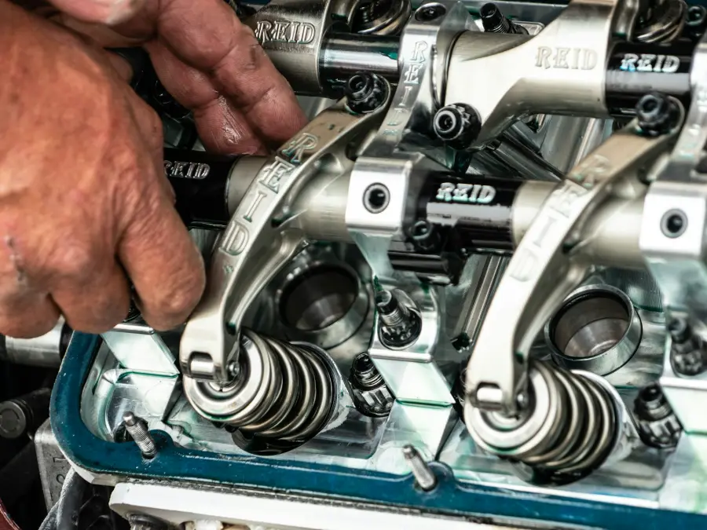
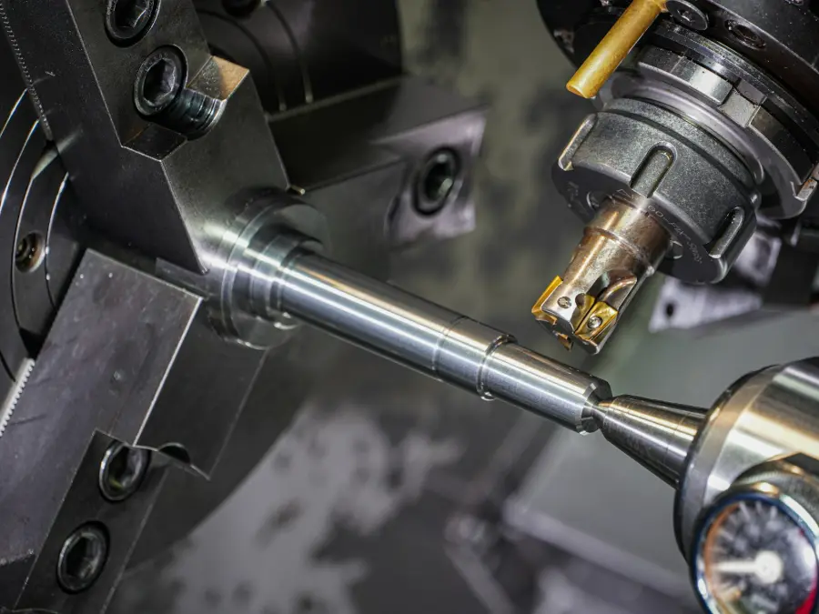
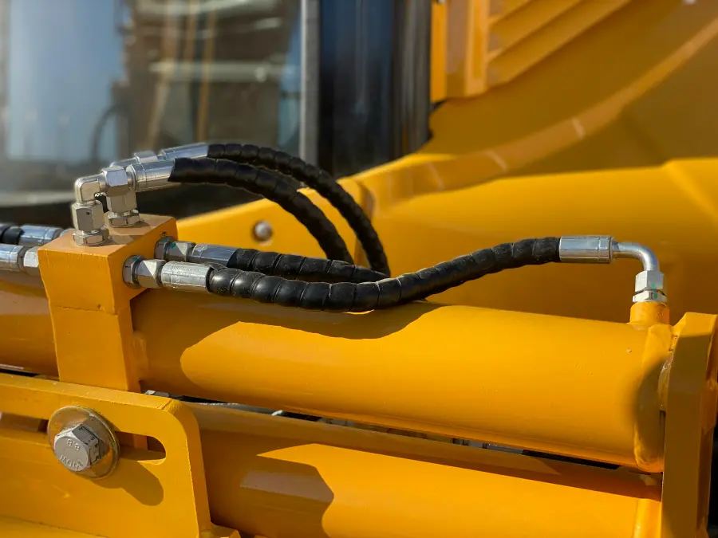
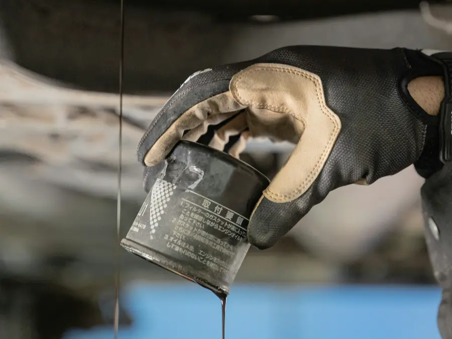
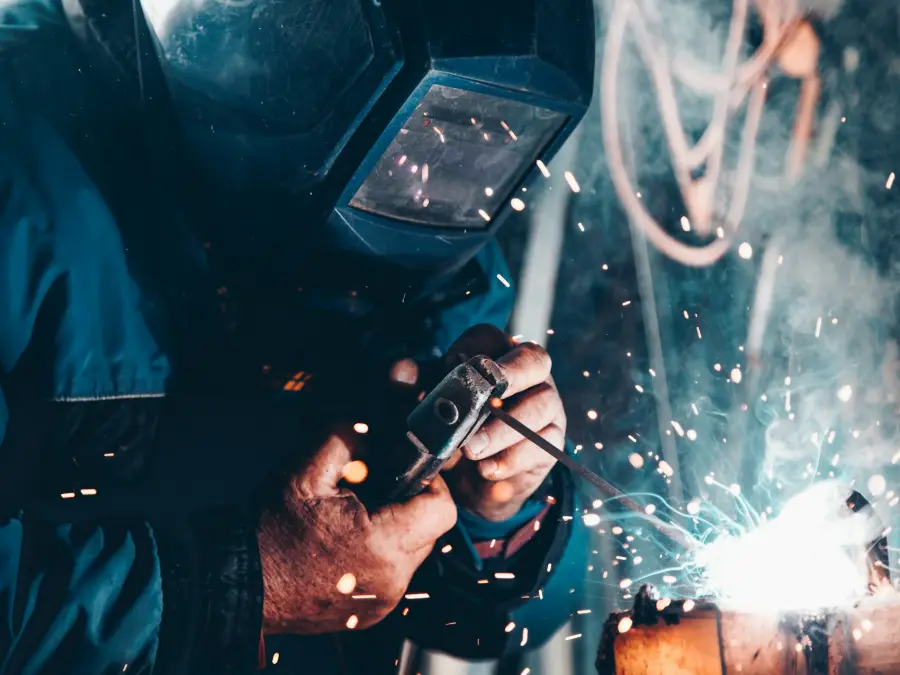
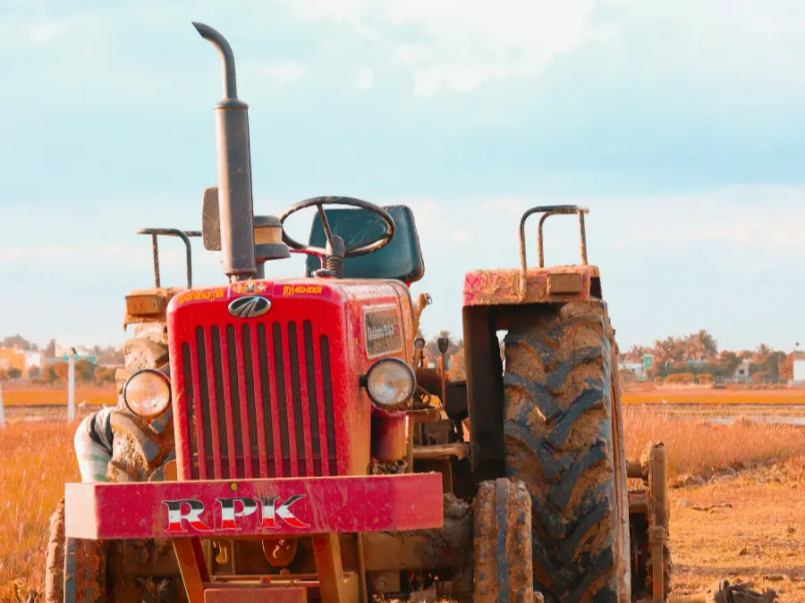

Pasá, te mostramos el taller
A cada cliente nuevo le mostramos las instalaciones, del mostrador de repuestos al torno. Acá podés hacer la misma recorrida antes de venir.
Ruta Nacional N.º 86, km 1346,5. Laguna Blanca, Formosa.
Repuestos
La recorrida empieza en el mostrador. Repuestos originales y alternativos para tractores y maquinaria pesada, y los lubricantes Shell, de los que somos distribuidores oficiales.
Marcas con las que trabajamos
Tocá una marca para ver sus repuestos en el catálogo.
Catálogo
Catálogo de muestra: los productos y precios son ejemplos hasta cargar la lista real.
Viendo repuestos de
No está en la página, pero puede estar en el mostrador
En el local tenemos mucho más de lo que entra acá. Escribinos qué buscás y te decimos si lo tenemos, si lo conseguimos o si lo fabricamos.
Preguntar por WhatsAppMecánica pesada
Taller especializado en tractores y maquinaria pesada. Se trabaja con turno y con los repuestos a mano, en el mismo lugar.
- Taller especializado en tractores
- Repuestos originales y alternativos en el mismo lugar
- Trabajos programados con turno

Tornería
Fabricamos y reparamos piezas a medida a partir de la pieza rota, un plano o una medida. Trabajamos hierro, grilón, poliamida y bronce.
- Maquinado de precisión y diseño de piezas
- Roscas en todos los pasos, milimétricos y en pulgadas
- Pernos, bujes y puntas de eje

Hidráulica
Reparamos y fabricamos cilindros hidráulicos, un trabajo que no vas a encontrar en otro taller de la zona.
- Reparación y fabricación de cilindros
- Mangueras hidráulicas armadas a medida
- Bombas, conexiones, sellos y empaquetaduras

Lubricentro
Cambio de aceite y filtros con lubricantes Shell para motor, transmisión e hidráulico. También los llevás en balde para tener en el campo.
Ver lubricantes en el catálogo
Herrería y fabricación
Soldaduras de todo tipo y fabricación de implementos completos para el trabajo agrícola.
- Desmalezadoras y cuchillas
- Acoplados
- Tanques de agua y de combustible
- Protecciones frontales y laterales para tractores

Chapa y pintura
Reparación de chapa y pintura completa para tractores, implementos y maquinaria.
Consultar por chapa y pintura
Si la máquina no puede venir, vamos nosotros
Hacemos asistencia a campo en toda la provincia de Formosa y en zonas cercanas del Paraguay. El viaje se cobra por kilómetro y cada salida se presupuesta antes de arrancar.
Pedir asistencia a campoNadie se va sin una solución
Es lo que más nos agradecen: que buscamos la vuelta hasta resolver el problema, con buen precio y en el tiempo que prometimos. La garantía de cada trabajo y de cada repuesto te la informamos junto con el presupuesto.
Trabajamos con
- Productores agropecuarios de toda la provincia
- Casi todos los municipios de Formosa
- Dirección de Vialidad Provincial
- SPAP
- Universidad Provincial de Laguna Blanca
- Escuela Agrotécnica
Fin del recorrido. Ahora te esperamos en el local
Ruta Nacional N.º 86, km 1346,5
Laguna Blanca, Formosa
Horarios
| Lunes a viernes | 7:30 a 12 y 14:30 a 19 |
|---|---|
| Sábados | 7:30 a 12 |
| Domingos | Cerrado |
Fuera de horario atendemos solo urgencias de entrega de repuestos.
Contacto
- WhatsApp 3718 417471
- Llamar al 3718 417471
- serviciosagrop.osuna@gmail.com
- Instagram @agrosunaserviciosagropecuarios
Te responden Juan Manuel, Federico o Griselda.